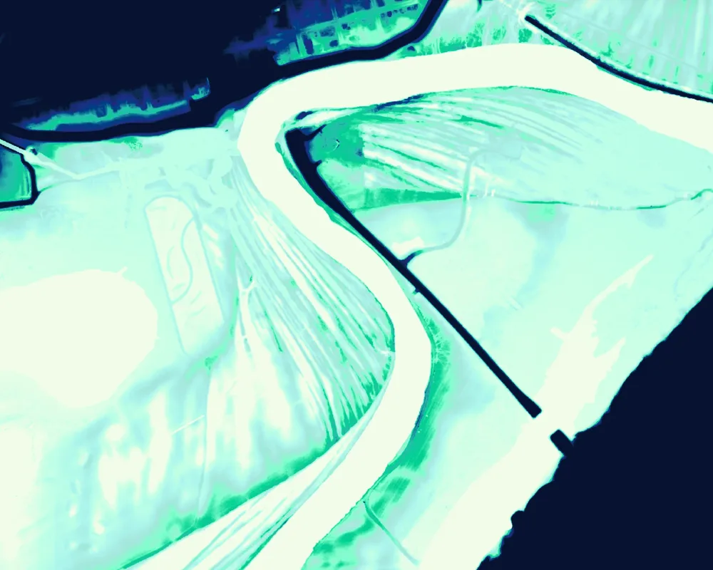
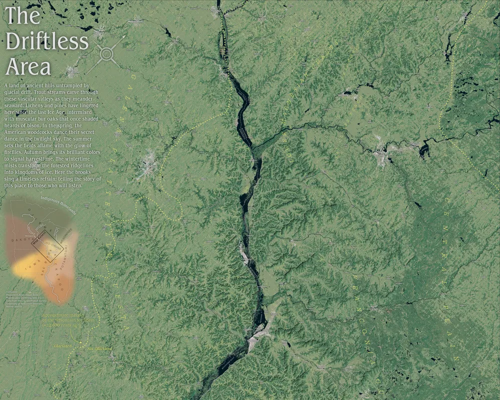

Jake Steinberg: Star Tribune basemap styles
Star Tribune basemap styles · 2025–2026
Five styles, five jobs
A newsroom basemap sits under stories that want opposite things. A hiking guide wants contours and trail names. A precinct map wants the land to get out of the way. All the Star Tribune styles read the same data schema (Protomaps roads, water, land use, places, buildings and boundaries) from the same Minnesota tile archive.
Variants
One-off
The styles compared
Strib Core
Style file
still to come
Strib Light
- Background#f7f7f7
- Water#d4e4ef
- Parks#e3efec
- Forest#e3efec
- Wetlandoff
- Highway#FFFFFF
- Casingoff
- Buildingsoff
Strib Dark
- Background#313740
- Water#0f1e35
- Parks#264e43
- Forestoff
- Wetland#1a3040
- Highway#667482
- Casing#222a32
- Buildings#3a4150
Strib Outdoors
- Background#fffbf4
- Water#c0efff
- Parks#DCF7D9
- Forest#d4f5d1
- Wetland#F1FECC
- Highway#FFF9D1
- Casing#C8CCD0
- Buildings#e8e4dc
Strib Elex
- Background#ffffff
- Water#949494
- Parksoff
- Forestoff
- Wetlandoff
- Highway#FFFFFF
- Casing#DADADA
- Buildingsoff
Strib Outdoors Fall
Style file
still to come
Strib Outdoors Winter
Style file
still to come
Strib Elex-1
Style file
still to come
Strib Paisley
- Background#C8B9DF
- Water#5a4979
- Parks#b4a1d4
- Forestoff
- Wetland#9c8cba
- Highway#FFF2A3
- Casingoff
- Buildings#E3DBF0
Strib Core
Style file
still to come
Strib Light
- Townsoff
- Neighborhoodsoff
- Lakes11 px · Regular italic · #1B5A8B
- Rivers12 px · Regular italic · #1B5A8B
- Parksoff
- Major roads15 px · Regular · #7e7e7e
- Minor roads14 px · Regular · #7e7e7e
Strib Dark
- Townsoff
- Neighborhoodsoff
- Lakes11 px · Regular italic · #4a9ec4
- Rivers12 px · Regular italic · #4a9ec4
- Parks12 px · Regular italic · caps · #5aaa6a
- Major roads15 px · Regular · #a0aab8
- Minor roads14 px · Regular · #8a94a2
Strib Outdoors
- Towns20.8 px · Regular · caps · #585C5F
- Neighborhoods20.8 px · Regular · caps · #585C5F
- Lakes13 px · Regular italic · #1B5A8B
- Rivers12 px · Regular italic · #1B5A8B
- Parks12 px · Regular italic · caps · #00854B
- Major roads14 px · Regular · #737A82
- Minor roads12 px · Regular · #737A82
Strib Elex
- Towns14.6 px · Regular · caps · #1F1F1F
- Neighborhoods11.1 px · Medium · caps · #575757
- Lakes14 px · Semibold italic · #ffffff
- Rivers10.5 px · Regular italic · #4E6B7C
- Parksoff
- Major roads13 px · Regular · #3D3D3D
- Minor roads14 px · Regular · #3D3D3D
Strib Outdoors Fall
Style file
still to come
Strib Outdoors Winter
Style file
still to come
Strib Elex-1
Style file
still to come
Strib Paisley
- Towns20.8 px · Semibold italic · caps · #7F61B3
- Neighborhoodsoff
- Lakes12 px · Semibold italic · #E3DBF0
- Rivers12 px · Semibold italic · #E3DBF0
- Parksoff
- Major roads15 px · Semibold italic · #a48cca
- Minor roadsoff
The stack as a list
| Band, top to bottom | In strib-elex.json |
|---|---|
| Labels | 12 visible label layers |
| Everything else above water | 46 visible layers (water, landuse, roads, boundaries) |
| Water (the anchor) | layer "water", #949494 |
| Election layers | inserted with beforeId "water", directly beneath water |
| Everything below | the background; 26 land fills switched off |
Terrain
The world in relief

Lindsey Vonn’s Mountains
A biography of Lindsey Vonn published in the run-up to the 2026 Winter Olympics, told by the mountains that made her. Six places on two continents (Lake Louise, Whistler and Buck Hill in North America; Åre, Cortina and Schladming in Europe), drawn as oblique terrain maps that share one lettering system: peak labels on leader lines with elevations, dashed resort boundaries, and a north arrow turned to the view. [[PLACEHOLDER: one sentence on how the six were made — software, elevation and imagery sources, vertical exaggeration — and confirm you made all six]]
 Cortina
Cortina Lake Louise
Lake Louise Whistler
Whistler Åre
Åre Schladming
Schladming Buck Hill
Buck Hill


Rincon Mountains
A golden hour rendering of Saguaro National Park’s Rincon Mountains made to commemorate a trip with an old friend.

Cloud Peak Wilderness
A gift given to friends I shared a great trip with: Wyoming’s Bighorns in perspective, lettered peak by peak and lake by lake. As the map itself says, “Scale varies in this perspective.”
These are still images, made for print and the web.
Elevation as data, seen from above
-

Relative elevation · 2026 A 2-page spread in my book that exposes the writhing and rambling of the Minnesota River, colored by elevation above river level, from the river itself to 10 ft.
-

Viewshed · 2026 A divinely inspired GIS viewshed analysis that appears in my book: how much of the Cathedral of Saint Paul can I see from this spot?
-

Shaded relief + land cover · 2023 Stylized land cover and elevation data for a sweeping wall map of the Driftless Area, 8,571 × 11,999 pixels at full size.

About
Experience
- Sept. 2023–presentGraphics Reporter, Minnesota Star Tribune
- 2023Graphics Intern, The Wall Street Journal: 42 maps on deadline with reporters and editors around the world
- 2022–23Interim Production Manager, UW Cartography Lab: managed eight student employees and guided production of more than 40 cartographic projects
- 2021–23Cartographer & Data Viz Designer, UW Cartography Lab: four interactive and 10 print maps for clients including The Nature Conservancy and Wisconsin Sea Grant
Education
- 2023M.S., Cartography and GIS, University of Wisconsin–Madison; master’s thesis built on interviews with 17 news cartographers. Taught two semesters of cartographic design and GIS labs as a graduate teaching assistant (Brenda Pfaehler Award of Excellence for instruction)
- 2019B.A., Journalism, University of Minnesota
Book

Author, The Twin Cities in 50 Maps (Belt Publishing, Nov. 17, 2026). Editor, Atlas of Design.
Selected honors
- 2026Online Journalism Awards, Breaking News, Large Newsroom: contributed to the Star Tribune’s winning entry
- 2026Three SND Awards of Excellence, Where is Uptown?
- 2026Minnesota SPJ, Best Infographic/Data Visualization (with Bryan Brussee and Mark Boswell)
- 2022CaGIS Arthur Robinson Award for best print map, Slivers of an Ancient Forest, also featured in Atlas of Design Vol. VI
- 2022NACIS Student Dynamic Map Competition, winner, Dark Sky Sanctuaries (with Aileen Clarke and Austin Novak)
Toolkit
QGIS · ArcGIS Pro · Google Earth Engine · GDAL & OGR · R · MapLibre & Protomaps · Mapbox · D3 · Svelte · Blender · Illustrator · Photoshop · Claude Code